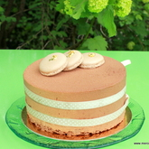

Explications utiles ou futiles de cuisine
Mes gâteaux préférés

- La farine : en général pour les brioches c’est bien d’utiliser une farine dite de force riche en gluten qui va donner de l’élasticité, mais on peut aussi mélanger la T55 et la gruau ou la T 45
- La levure fraîche : préférez la levure fraîche du boulanger si vous en avez la possibilité, on en trouve en général en grande surface en petits cubes de 25g. Je l’émiette directement dans la cuve du robot sur les poudres plutôt que de la diluer. Il faut également utiliser tous les éléments bien froids, cela permet d’éviter à la pâte de trop chauffer pendant le pétrissage, mais faites comme vous le sentez et surtout ne changez rien si ça marche pour vous avec le lait tiède et la dilution. J’ai pour principe de dire , si vous avez une recette qui fonctionne bien surtout n’essayez pas de trouver mieux ou différent ! La dose de 20g peut paraître importante, sachez qu’avec cette quantité votre pâte sera à surveiller car elle poussera plus vite, si vous avez du temps vous pouvez la réduire de moitié.
- Le sucre perlé : sucre en gros grains, utilisé en pâtisserie pour la réalisation ou la décoration de certains gâteaux. Il est obtenu grâce à l’agglomération, le broyage puis le calibrage de sucre cristal N°1. Si vous n’avez pas de sucre perlé utiliser des morceaux de sucre de canne légèrement concassés. On le trouve maintenant assez facilement en grande surface ou sur le net.
- Filmer au contact: c’est bien d’humidifier légèrement le film pour éviter que la pâte ne colle après la pousse. Le film protège de l’air et évite les bactéries, mais si vous préférez la technique du torchon humide, faites aussi comme vous le sentez.
- Dégazer : chasser le CO2 dégagée par l’action de la levure en rabattant la pâte pour lui redonner son volume initial.
- Bouler: façonner les brioches ou pains avec la paume de la main légèrement farinée en repliant les doigts sur le pâton d’un mouvement circulaire sans trop appuyer pour lui donner une forme bien ronde
- Clé en dessous: la soudure des plis de la pâte doit se trouver sous la boule et bien au centre .
- Dorure : Il est toujours recommandé d’ajouter une pincée de sel à l’oeuf entier, cela va aider à bien diluer le blanc et donner un mélange homogène. Eviter les coulures et dorer régulièrement c’est un plus, si certains me lisent ils se reconnaîtront.